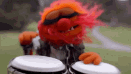

Not all projects are winners! Here is a write-up of BongoBoard, a project in which I have fully1
lost interest.2
tldr; I turned a DonkeyKong BongoFoo into a wireless Bluetooth keyboard. The hardware is done, the software basics are in place, and I now have zero interest in making it feel fun and then using it.
What?
A set of DK Bongos,3 disassembled and reassembled
into a wireless Bluetooth keyboard, thanks to an Adafruit Feather microcontroller. This keyboard has four
buttons—two in each drum head—and a microphone. The buttons are currently mapped to the keyboard direction arrows but can be remapped (in code) into more sophisticated keystroke outputs.
Why?
Because it tickled my fancy: I find the concept of “drumming” input into a computer hilarious.4
Because I could. Thanks to having recently built a slidewhistle-based Trombone Champ controller, I knew that the physical construction was something I could now do
relatively easily, and I wanted to practice those skills.
Why not?!
Who?
Me.
AF, who one midnight told me that a drum-inspired video game controller existed for a drumming-based video game.
A stranger on ebay who wouldn’t cancel an order made at midnight.
A friend with the elbow grease and determination to unscrew a bunch of proprietary screws without a proprietary screwdriver, and who offered advice towards attempting to salvage the onboard microphone.
Some friends who helped brainstorm fun use cases for the BongoBoard when the DKBongos had not yet been Adafruitified.
What for?
A handful of use-cases for which the BongoBoard would be fun:
Play tetris? Drum tetris! Challenge mode: play along with the theme song. Even more challenging mode: don’t play along with the theme song.
Type messages? Drum messages!
Use ever-popular Morse code, or use the BongoBoard-specific B4, the latest in T9-inspired predictive text
drumnology!
A beat poetry-style game, trading drum phrases with spoken phrases with the same beats. (h/t GH ) TODO-look up who5
TODO (h/t E)
How?
Opened DKTODO
Cut wires foo
Soldered wires from buttons to AdafruitFoo
Attempted to use the original onboard mic, which acts as a “clap” detector in the DKBongos game
Failed at the onboard mic salvage sidequest and soldered on basic electret mic instead6
Set up the adafruit FOO and wrote code to read in the button state and send it out as a BT keyboard stroke. (Code and set-up for the software is documented here).
Did a little drumming. Realized that I had exactly zero interest in spending time making the drummed keystrokes feel satisfying in the context of any import .
Parting thoughts
This project was more fun to imagine than it was to see through.
In the future, I might try to separate the “what would I do if I was going to do it” stage from the “do I actually want to have done it?” stage.
On the other hand, it was pretty cool to say to myself “I want to build this thing” and then…be able to build it. Even though I later lost interest.
BongoBoard got me a lot of conversational mileage, which was a plus. One of my favorite parts of building silly things is getting to talk about building silly things with other people, who have lovely silly ideas of their own.
I have some strong feelings about the types of “repurpose X into Y” projects that I enjoy making. It isn’t enough for a button to just act as a button—there needs to be a higher connection point. E.g., as it stands, the
BongoBoard is four buttons in a trench coat plastic housing. It can be used to do anything that four buttons can do. That doesn’t feel satisfying to me, though—I need it to serve its drum-function in addition to
acting as buttons. Drumming that results in art? Great. Drumming that results in communication? Great. Drumming that is an integral part of playing a game? Great. (Drumming that is just drumming? Why bother with the BongoBoard
at all?)
Getting the physical part of a project like this going is ~20% of the project: spending time on a nice-feeling resultant controller is the other 80%. (This is no surprise to anyone who has worked with a UX designer!) Often that
effort is worth it to me. For this project? Nope!
One thing that I don’t like about this project is that the physical controller does not feel or look aesthetically pleasing to me. If it was a little nicer (wood? metal? etc) or was slightly smaller, or both, I would be more
inclined to keep it around and spend a couple hours giving it at least one pleasing use-case.
For example, this Telegraph Key(singular)board is a simplified (single-key) version of the BongoBoard, but its form factor is so much more satisfying that it is a joy to have
around and use. While the BongoBoard feels relatively sturdy for the plastic drum that it is, it doesn’t quite have the necessary je ne sais quoi.
I kind of want this thing out of my home? I have limited space, and it does not bring me joy. If you want to take it from its current state and turn it into something delightful,78 drop me a line and we can figure out a transfer.

Thanks to AF for the inspiration, various pals for the brainstorming, and MF for the teardown aid and mic mentorship.
Welllllll almost fully! I will say that in the process of writing the “potential usage” section I got a bit excited again, and considered at the very least porting over my
Morse keyboard code into the BongoBoard. I had to remind myself that this project has been sitting in abeyance for nearly a year for a reason, and that reason is “even though it
would be cool, there are other things I’d rather be doing with my time.”↩︎
Now that this is published, I can move it out of my mental “projects in progress” queue and move on. Phew.↩︎
For the uninitiated, DK Bongos are a video game controller built by Nintendo for a series of Donkey Kong rhythm games—games where you drum your way through the jungle, for example. Or so I have been led to believe—I have never
actually played a game on DK Bongos, as video games were not a part of my youth.
This is one I think would be especially cool—and most time-consuming!—to actually implement.↩︎
What is an electret microphone? Great question! You won’t regret reading this comprehensive Open Music Labs write-up for the answer:
Electret Microphones.↩︎
Perhaps you have a use-case that will be especially silly when drummed? Or one of the ideas I noted above tickles your fancy? Maybe you’ll want to paint it, or bedazzle it, or otherwise jazz it up? Or just use it in its analog
form and do some drumming!↩︎